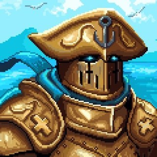
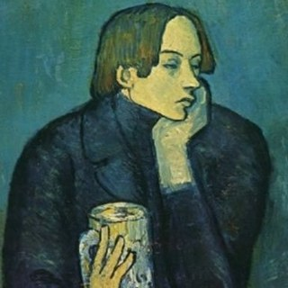
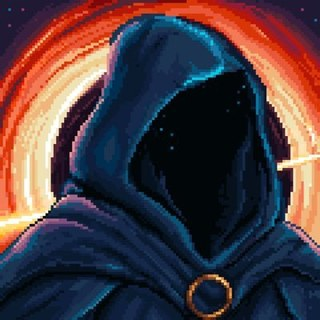

Cameraseat 1
1Vulekinder+$73.13
Cameraseat 2
2Sailor+$6.54
Cameraseat 3
3Dostoevsky-$8.62
ETHis hot. 2× score
- BuildBuild
- Surprise Hot #1Hot #12× score
- BuildBuild
- Surprise Hot #2Hot #22× score
- Final BuildFinal
- 500× BoostBoost500×
- 1VulekinderSOL+$73.13
- 2

SailorBTC+$6.54 - 3

Dostoevskyflat-$8.62 - 4

innoXRP-$40.59